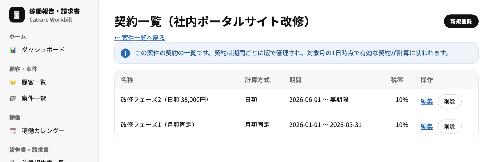
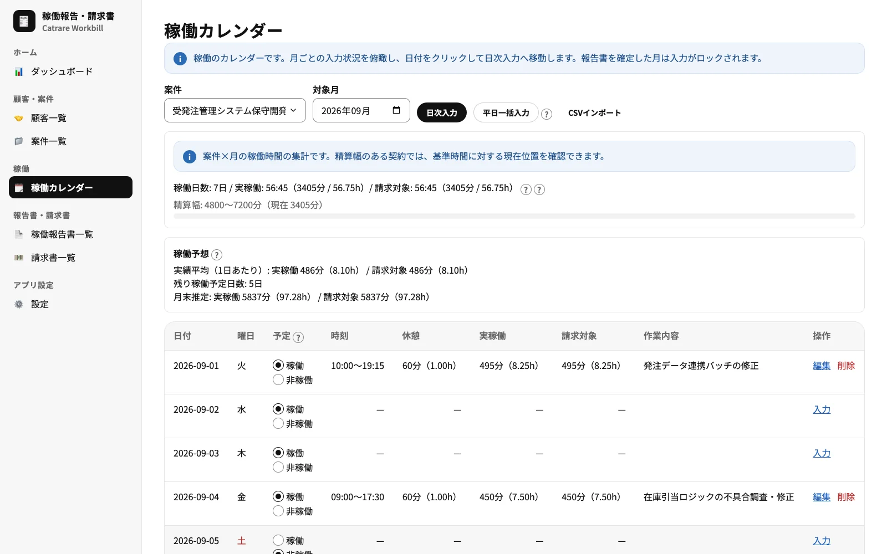
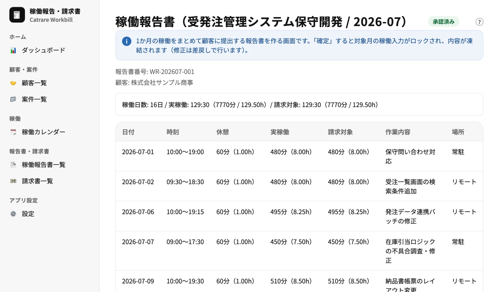
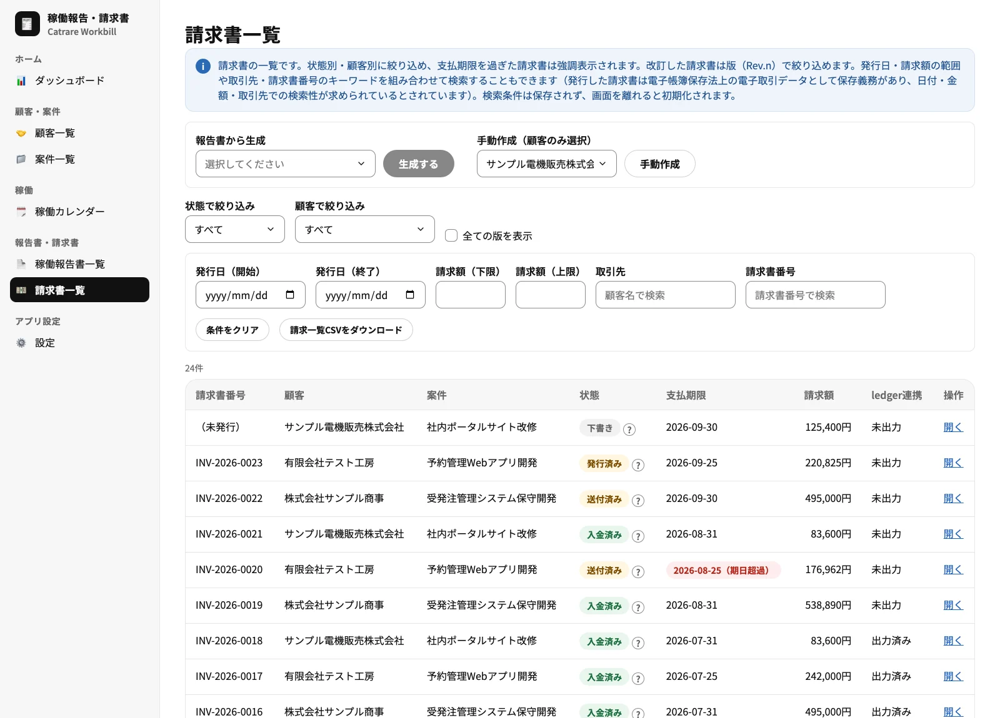
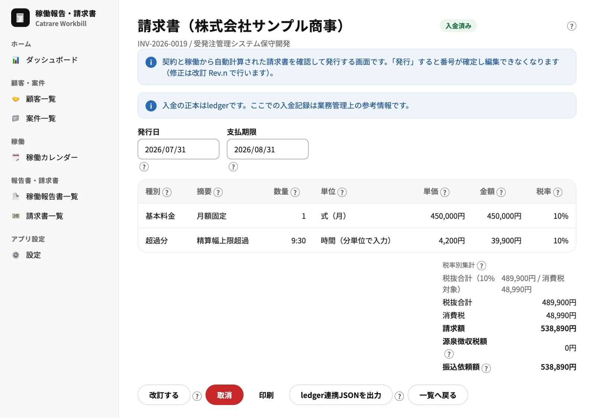
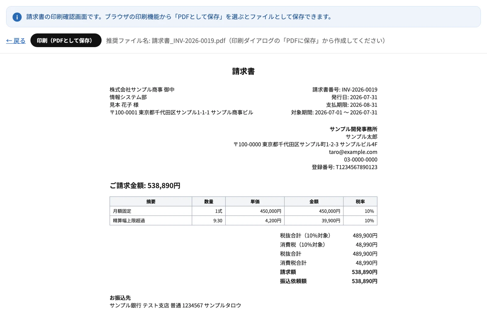

Web App
WORKBILL稼働報告・請求書
フリーランス・個人事業主のための、稼働報告書と請求書を作るブラウザアプリです。日々の稼働時間を入力すると、契約条件に沿って報酬を自動計算し、月次の稼働報告書と請求書を作成・発行できます。データはお使いのブラウザ内だけに保存され、サーバーには送信されません。
- 無料
- インストール不要
- データは端末内のみ
- LEDGERと連携

Features
稼働の入力から請求まで。
顧客・案件・契約の管理
契約ごとに請求方式（月額固定・月額＋精算幅・時間単価・日額・固定金額）、丸め規則、税率、有効期間を設定し、顧客ごとに締め日と支払条件を設定します。条件が変わったときは期間ごとに契約を追加して履歴を残せます。
稼働カレンダー・日次入力
日々の稼働時間・休憩・作業内容を分単位で入力できます。稼働予定（祝日マスター対応）、平日の一括入力、CSVインポートにも対応します。
月末稼働予想
実績の平均と残りの稼働予定日数から、月末の稼働時間を推定します。精算幅のある契約では、基準時間に対する現在位置も確認できます。
稼働報告書
月次の報告書を作成し、下書き・確定・提出・承認の状態で管理します。確定すると内容は凍結され、修正は差戻しで行います。印刷用の表示からPDFに保存できます。
報酬計算・請求書の作成
契約条件と稼働から請求明細を自動で生成します。消費税は税率ごとに1回の端数処理。手動の明細追加、請求書番号の採番、支払期限の算出にも対応します。
発行・改訂・入金管理
発行すると番号が確定し、編集できなくなります。修正は改訂（Rev.n）で行い、送付・入金の記録や期日超過の強調表示、取消にも対応します。
請求書の検索・印刷
発行日・請求額の範囲・取引先・請求書番号で検索できます（電子帳簿保存法を意識した設計）。登録番号や税率別の集計を記載した書式で印刷確認し、PDFに保存できます。
ダッシュボード
年間の稼働時間・請求額の推移を、案件別の内訳つきで表示します。未確定の報告書・未発行の請求書・入金待ち・期日超過を一目で確認できます。
LEDGER連携・バックアップ
確定した請求データをJSONで出力し、LEDGERへ取り込めます。JSONバックアップからの復元にも対応します。
Screens
実際の画面をご覧ください。
掲載している画面は、架空の個人事業主「サンプル太郎」のダミーデータです（取引先名・金額はすべて架空のものです）。
顧客・案件・契約を管理
案件ごとに、期間別の契約を版管理します。たとえば「1〜5月は月額固定、6月から日額」のように条件が変わっても、対象月の契約が自動で計算に使われます。
- 請求方式：月額固定・月額＋精算幅・時間単価・日額・固定金額
- 丸め規則・税率・有効期間は契約ごとに、締め日・支払条件は顧客ごとに設定

稼働カレンダーで日々の稼働を入力
案件と月を選び、日々の稼働時間と作業内容を入力します。稼働予定を切り替えると、月末の稼働予想が更新されます。精算幅のある契約では、基準時間に対する現在位置も表示されます。
- 休日は既定で非稼働（祝日マスター対応）
- 平日一括入力・CSVインポートに対応

月次の稼働報告書を作成
1か月の稼働をまとめて顧客に提出する報告書です。確定すると対象月の稼働入力がロックされ、内容が凍結されます。修正は差戻しで行い、経緯が分かる状態を保ちます。
- 状態：下書き → 確定 → 提出 → 承認
- 印刷用の表示からPDFに保存

請求書を状態別に管理
請求書を状態・顧客・発行日・請求額・取引先で絞り込めます。支払期限を過ぎた請求書は赤く強調され、LEDGERへの連携状況も一覧で確認できます。
- 報告書から生成、または顧客を選んで手動作成
- 改訂した請求書は版（Rev.n）で絞り込み

契約と稼働から請求書を自動計算
契約条件と確定した稼働から、請求明細を自動で作ります。精算幅の上限超過分の加算や、税率ごとの消費税の集計も自動です。発行すると番号が確定し、修正は改訂で行います。
- 消費税は税率ごとに1回の端数処理
- 源泉徴収税額は自動判定せず、手入力で対応

印刷確認してPDFに保存
登録番号・振込先・税率別の集計を記載した書式で、請求書を印刷確認できます。ブラウザの印刷機能から「PDFとして保存」を選ぶと、ファイルとして保存できます。
- 推奨ファイル名を画面に表示

Tech Stack
ブラウザだけで完結する構成です。
| 実行方式 | ブラウザで動く静的Webアプリ（サーバー処理なし）。GitHub Pages で配布 |
|---|---|
| フロントエンド | TypeScript ／ React 19 ／ Vite ／ React Router（HashRouter） |
| UI | Tailwind CSS v4 ／ shadcn/ui（Base UI）を土台にした共通UIパッケージ ／ Noto Sans JP（自己ホスト）／ Recharts（グラフ） |
| データ保存 | IndexedDB（Dexie.js）。すべてブラウザ内に保存し、サーバーへは送信しません |
| 状態管理・検証 | Zustand ／ Zod（入力・バックアップの検証） |
| 日付・CSV | date-fns ／ PapaParse |
| テスト・品質 | Vitest（単体テスト）／ Playwright（E2E）／ Biome（Lint・Format） |
| 開発体制 | pnpm モノレポで WORKBILL・LEDGER と UI 部品を共有し、設計書を正としてテスト駆動で段階的に開発しています。 |
ローカルファースト
稼働・請求のデータはお使いのブラウザのIndexedDBにだけ保存し、ネットワークへは送信しません。JSONバックアップで別の端末へ移せます。
計算ルールを純関数に集約
時間は分単位の整数で扱い、丸め・報酬計算・消費税の端数処理は入出力を持たない純関数にまとめ、同じ入力から必ず同じ結果になるようテストで固定しています。
確定したものは凍結
確定済みの報告書・発行済みの請求書はスナップショットとして凍結します。直接編集はできず、差戻し・改訂という手順だけで変更します。
LEDGERとの疎結合
帳簿は別アプリのLEDGERが担い、確定した請求データをJSONファイルで受け渡します。売上取引・売掛金・入金の正本はLEDGERです。
Notes
ご利用にあたって
本アプリは稼働報告・請求書作成を補助するツールです。消費税・源泉徴収などの税務上の扱いは、ご自身の契約や状況に合わせてご確認ください（源泉徴収は自動判定しません）。
データはお使いのブラウザにだけ保存されます。ブラウザのデータ削除や端末の変更で失われることがあるため、設定画面から定期的にバックアップを保存してください。
PCのブラウザでの利用を想定しています。
WORKBILL を使ってみる
登録・ログインは不要です。ブラウザで開くとすぐに使えます。初めて開いたときは空の状態です。